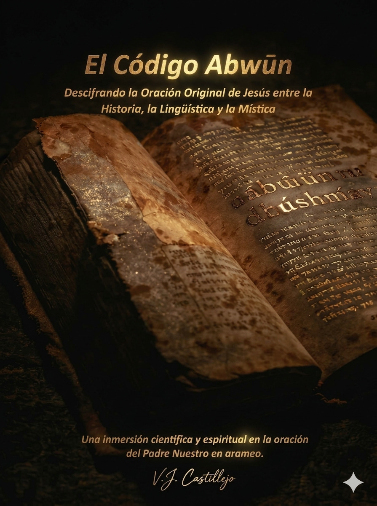

REVELACIÓN LINGÜÍSTICA
¿Y si la oración que conoces no fuera la que Jesús pronunció?
Una investigación que une filología ancestral e IA para rescatar el sonido original del Padre Nuestro.
RESERVAR COPIA EXCLUSIVADescubre por qué la traducción convencional de "Abba" ha ocultado durante siglos el 70% del poder místico de esta palabra.
¿Es la santidad un estado o una acción recíproca? El error gramatical que cambió nuestra forma de entender lo divino.
La reconstrucción técnica de los sonidos en Arameo Galileo: Por qué la vibración original es la llave de la conexión real.
"El arameo no separa lo físico de lo espiritual. Cuando Jesús decía 'Abwün', invocaba a la respiración misma del cosmos que da vida a todo."
Neil Douglas-Klotz"Recuperar el sonido original en dialecto galileo es el paso más cercano para entender su mente sin los filtros de las traducciones occidentales."
Consenso de Historiadores"En el arameo, la raíz de la palabra contiene una vibración que el mundo occidental ha olvidado. Volver al sonido es recuperar la esencia."
Investigación Lingüística"Este libro nació de una necesidad profunda de honestidad intelectual. No buscamos una nueva religión, sino rescatar la esencia pura que el tiempo veló."
V.J. CastillejoRegístrate para acceder a la preventa limitada y recibe un adelanto exclusivo.